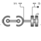
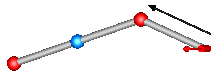

JointSSRSpherical - spherical - revolute joint aggregation with mass (no constraints, no potential states) |

|
Diagram
{kind=link}
Information
This information is part of the Modelica Standard Library maintained by the Modelica Association.
This component consists of a spherical joint 1 at frame_a, a revolute joint at frame_b and a spherical joint 2 which is connected via rod 1 to the spherical joint 1 and via rod 2 to the revolute joint, see the default animation in the following figure (the axes vectors are not part of the default animation):

Besides an optional point mass in the middle of rod 1, this joint aggregation has no mass and no inertia, and introduces neither constraints nor potential state variables. It should be used in kinematic loops whenever possible since the non-linear system of equations introduced by this joint aggregation is solved analytically (i.e., a solution is always computed, if a unique solution exists).
An additional frame_ib is present. It is fixed in rod 2 connecting the revolute and the spherical joint at the side of the revolute joint that is connected to this rod (= rod2.frame_a = revolute.frame_a).
An additional frame_im is present. It is fixed in rod 2 connecting the revolute and the spherical joint at the side of spherical joint 2 that is connected to this rod (= rod2.frame_b). It is always parallel to frame_ib.
The easiest way to define the parameters of this joint is by moving the MultiBody system in a reference configuration where all frames of all components are parallel to each other (alternatively, at least frame_b and frame_ib of the JointSSR joint should be parallel to each other when defining an instance of this component).
Parameters (14)
| animation |
Value: true Type: Boolean Description: = true, if animation shall be enabled |
|---|---|
| showMass |
Value: true Type: Boolean Description: = true, if point mass on rod 1 shall be shown (provided animation = true and rod1Mass > 0) |
| rod1Length |
Value: Type: Length (m) Description: Distance between the origins of the two spherical joints |
| rod1Mass |
Value: 0 Type: Mass (kg) Description: Mass of rod 1 (= point mass located in middle of rod connecting the two spherical joints) |
| n_b |
Value: {0, 0, 1} Type: Axis Description: Axis of revolute joint fixed and resolved in frame_b |
| rRod2_ib |
Value: {1, 0, 0} Type: Position[3] (m) Description: Vector from origin of frame_ib to spherical joint in the middle, resolved in frame_ib |
| phi_offset |
Value: 0 Type: Angle_deg (°) Description: Relative angle offset of revolute joint (angle = phi(t) + from_deg(phi_offset)) |
| phi_guess |
Value: 0 Type: Angle_deg (°) Description: Select the configuration such that at initial time |phi(t0) - from_deg(phi_guess)| is minimal |
| sphereDiameter |
Value: world.defaultJointLength Type: Diameter (m) Description: Diameter of the spheres representing the two spherical joints |
| rod1Diameter |
Value: sphereDiameter / Types.Defaults.JointRodDiameterFraction Type: Diameter (m) Description: Diameter of rod 1 connecting the two spherical joints |
| rod2Diameter |
Value: rod1Diameter Type: Diameter (m) Description: Diameter of rod 2 connecting the revolute joint and spherical joint 2 |
| revoluteDiameter |
Value: world.defaultJointWidth Type: Diameter (m) Description: Diameter of cylinder representing the revolute joint |
| revoluteLength |
Value: world.defaultJointLength Type: Distance (m) Description: Length of cylinder representing the revolute joint |
| checkTotalPower |
Value: false Type: Boolean Description: = true, if total power flowing into this component shall be determined (must be zero) |
Inputs (5)
| sphereColor |
Default Value: Modelica.Mechanics.MultiBody.Types.Defaults.JointColor Type: Color Description: Color of the spheres representing the two spherical joints |
|---|---|
| rod1Color |
Default Value: Modelica.Mechanics.MultiBody.Types.Defaults.RodColor Type: Color Description: Color of rod 1 connecting the two spherical joint |
| rod2Color |
Default Value: rod1Color Type: Color Description: Color of rod 2 connecting the revolute joint and spherical joint 2 |
| revoluteColor |
Default Value: Modelica.Mechanics.MultiBody.Types.Defaults.JointColor Type: Color Description: Color of cylinder representing the revolute joint |
| specularCoefficient |
Default Value: world.defaultSpecularCoefficient Type: SpecularCoefficient Description: Reflection of ambient light (= 0: light is completely absorbed) |
Connectors (6)
| frame_a |
Type: Frame_a Description: Coordinate system fixed to the component with one cut-force and cut-torque |
|
|---|---|---|
| frame_b |
Type: Frame_b Description: Coordinate system fixed to the component with one cut-force and cut-torque |
|
| frame_ib |
Type: Frame_b Description: Coordinate system at origin of frame_b fixed at connecting rod of spherical and revolute joint |
|
| frame_im |
Type: Frame_b Description: Coordinate system at origin of spherical joint in the middle fixed at connecting rod of spherical and revolute joint |
|
| axis |
Type: Flange_a Description: 1-dim. rotational flange that drives the revolute joint |
|
| bearing |
Type: Flange_b Description: 1-dim. rotational flange of the drive bearing of the revolute joint |
Components (6)
| world |
Type: World |
|
|---|---|---|
| revolute | ||
| rod1 |
Type: SphericalSpherical |
|
| rod2 |
Type: FixedTranslation |
|
| relativePosition |
Type: RelativePosition |
|
| position_b |
Type: Constant[3] |